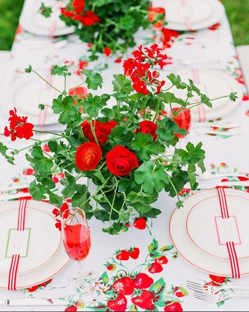
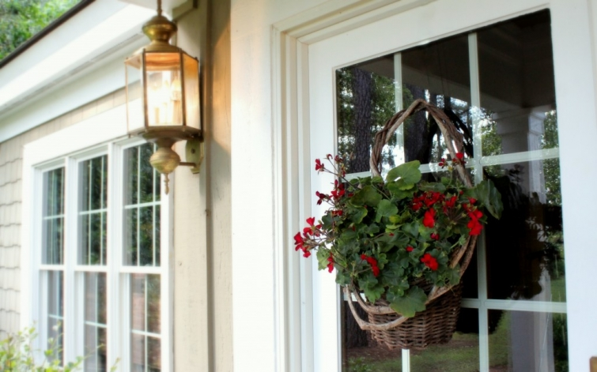

.png)
.PNG)
.PNG)
.PNG)
.PNG)
.PNG)
.JPG)
.JPG)
.PNG)
.PNG)


.jpg) I mentioned in my Mother’s Day post that all those photos of decorating and cooking with strawberries got the wheels in my brain turning…and I bet you thought they only inspired that dinner. 🙂  Well I am afraid they affected much more than that.  The red and green color scheme is one of my favorites, and because of the strawberries and geraniums in this photo…
I mentioned in my Mother’s Day post that all those photos of decorating and cooking with strawberries got the wheels in my brain turning…and I bet you thought they only inspired that dinner. 🙂  Well I am afraid they affected much more than that.  The red and green color scheme is one of my favorites, and because of the strawberries and geraniums in this photo…

The red and green and geraniums and strawberries are now running rampant around here. Would you like to see?  (Nod your head yes. 🙂 ) Let’s start in the foyer.
Remember, this is hanging on the front door…

So after you pass the geraniums there, you see geraniums on the foyer buffet along with red and green books on the silver tray (and of course the red candles found their way back in.)
 On the other end, gardening tools, plant markers, and green patterned gardening gloves are in the jar, and seed packets are there beside them.Then walk on into the family room. Â You will find another geranium on the mantel along with a red berry basket, another gardening tool, and one of our red lanterns.
On the other end, gardening tools, plant markers, and green patterned gardening gloves are in the jar, and seed packets are there beside them.Then walk on into the family room. Â You will find another geranium on the mantel along with a red berry basket, another gardening tool, and one of our red lanterns.
Â
The throw pillows on the sofa are back to red again after a month or two of spring time yellow.
And the cabinet has another red lantern from the Pottery Barn outlet. Â (Love that place.)
And on the end table…guess what…another geranium!  I told you they were running rampant…and we are just getting started! 🙂I’m afraid the red and green and geraniums and strawberries have really taken over the dining room.  See for yourself…Yes, there is another geranium on the table and berry baskets on all the plates…and even a berry basket filled with strawberries.I just can’t resist red geraniums…they seem like the quintessential summer plant to me.  (All you hydrangea lovers are jealous I know. 🙂 )
Plus, they really work well with the red checked drapes.
The red and green colors have taken over the cookbooks in the dining room too.
Red napkins by the cookie jars…
Now let’s take a look in the kitchen. Â Do you spy geraniums and strawberries?
Hmmm…the photo above was taken today, and the one below was taken yesterday… when there was half a cake on the cake plate. Wonder where that went?? Everyone around here claims innocence, of course.
Sorry…where were we? Â Oh yes, red and green…the cookbooks are dressed to match.
And there is a recipe on the desk chalkboard for…strawberry pretzel salad..what else?
Â
One more look at the kitchen corner.
and that wraps up all the red and green and geraniums and strawberries for this post. Â It’s entirely possible that another post might be on its way with the same contagious disease affecting a different area of the house, but I’m not quite sure yet.
 We’ll just have to wait and see. 🙂
Has your home caught any of the red-and-green-and-strawberry-and-geranium disease?Â
We’d love to hear!


.PNG)
I’m late to the party, and unfortunately Texas sun does not smile sweetly on the geraniums, but my home has been forms or red and green for about 40 years…..does that count???
Love your pictures and your home!
Thank you for your time and effort to create a lovely place to visit.
Blessings,
J——————————————————————–
Better late than never! 🙂 No the Texas heat would be quite brutal to geraniums. Ours seem to do best when there is a little touch of coolness in the air. I think the red and green in your home should definitely count! (Especially since it is one of my favorite combinations.) Thank you for your kind comment and for taking the time to read my posts. I am so glad you enjoy them!
Kelly
Everything looks lovely! So fresh and summery! I love the strawberry baskets on the plates! How creative! I have missed reading your blog. I’ve been repainting the kids bathroom and the kitchen for the last 3 weeks! So glad that is over with. I’ll be sharing it soon on my blog! Thought of you often while I was doing my kitchen. I just love the way you change it up every season and I kept thinking of how I can now change my up much easier. Thanks for all your inspiration!
Kelly,
I am loving your geranium and strawberry touches–makes me want to skip the last week of school and just plant things!:-) After last week’s snowstorm though, I think I’ll be okay waiting until next weekend.
I have to agree with Sally’s comment–I enjoy all your posts tremendously, but I’d say my very FAVORITE ones are about your home and how you decorate. Your teaching background and your excellent decorating taste merge to create wonderful posts that aren’t found anywhere else on blogland. I think you’ve definitely found your calling for your next career!
Enjoy your last days of the school year! 🙂
So put me in the summer mood. Lovely! The reds are just wonderful!
Kelly-Hello! Your home is just lovely-every room. Geraniums make me think of my grandma who “wintered” her geraniums over and brought them out every spring. Gosh. Now I want to go buy some!
Hi Kelly
Love it all. I have one red geranium but unfortunately I’ve had some caterpillars who like it too.
I’m crazy about green and orange.
Kind Regards
Karen
Always enjoy your seeing your new posts. I haven’t made the pretzel salad you have on this post, but I have tasted it at a church dinner. Out of this world good. I would rather have Strawberry Pretzel Salad than cake!
I always try to get a closer look at your books. I LOVE the tall bookshelves in your living room. Not that you don’t have ideas for new posts running out of your ears already, but if you ever decide to take us on a tour of your book collection that would be wonderful!
Kelly I love the red and green – I use it all over my house too, but I admit to still having the yellow and green out in the front of the house. The kitchen is turning over to the red in time for Memorial Day. I always love the posts of your house. I just want to know where you get your energy after all day with kids!
I enjoy seeing all the details- down to coordinating your books. That’s such a cute touch. Debra- I saw berry baskets like those at T.J. Maxx (or maybe it was Homegoods) this past weekend. Hopefully it’s not just a local thing. Kelly, that’s such a great idea to use them for place settings!
Thank you for the beautiful Friday morning wake up, now if I could just grab a cookie or two from your glass jars and a have a Starbucks coffee in hand. All your sweet touches of red and the flowers are such sweet torture. Your home is delicious in a sweet simplistic way. You won’t believe this, but there were a few little flakes coming down just an hour ago and we woke to 38 degrees this morning. Oh, I love red geraniums. I haven’t bought any yet as our weather here is bouncing all over the place. My boxwoods, 2 new hydrangeas, impatiens and herbs are waiting to be planted. I had to cover the flower trays and tuck away my herbs inside last night. Ugh! Hopefully Sunday will bring back warmth. I love your neutral backdrop that allows the versatility of the color changes. Red graces the outside décor with umbrella, cushions and flowers here as it looks nice against our gray cape cod. I have red doors and they are fading a bit, so I will be repainting in the next couple of weeks. I’m so eager to be enjoying the outdoors but until then I will enjoy your beautiful home through your blog. Oh, the warmth of the South! Everything is lovely Kelly. Thank you again for this nice Friday wake up. I think it is going to be a day of Barnes and Noble, a coffee in hand and a quick stop at the greenhouse for a red geranium for the kitchen windowsill at least. Have a great weekend ahead Kelly. P. S. I think you said you got the berry baskets at Target last year. Wishing I would have seen those. I’m going to have to surf the net and see if I can find some. I have a few ceramic ones just for serving and décor.
Debra
Kelly,
What a great display of color. I think this could ride through summer is so fresh. I love the first image with the geranium and ranunculas for the wedding table. The gardening theme is so perfect with the flowers.
You always give me fresh ideas to change out a few things in my own home, thanks, Kelly!
xo,
Karen
You are speaking my language – and I love the use of the geraniums and strawberries for a spring/early summer decorating theme. I am inspired!
Funny side note – I don’t like red outside in my gardens for some reason. Give me pink, purples, white, a bit of yellow. But inside, I must have red accents in the kitchen & living room.
Okay…what is your secret? to work all day (with children, no less) and still have the brain cells and energy to come home and be so clever and energetic? I love, love – LOVE the red (as I’ve commented before), so I devoured this post of my favorite eye candy. Yes – my outside plants are all red – including a red geranium by the front steps. Sadly, I cannot have real plants in my home – my cat has chewed every plant I’ve ever tried to keep inside (unless I put it high on the fireplace mantle). A friend gave me an aloe vera for Christmas…she ate the plant down to a nub. ~sigh~ 🙂
Kelly,
I love your red and green scheme. It is lovely for this time of year. I have several plants around the house but only one geranium in a mixed hanging basket on the screened in porch. The rest are ferns and gerbera daisies. I love the super intense orange gerbera daisies the best. I also have lemon grass, citronella and lavender planted on the porch to deter mosquitoes. I can’t wait to see where else your geraniums and strawberries wind up. I might have to make that yummy strawberry pretzel salad for Memorial day weekend.
Kelly – As usual I LOVE the decorating in your house. I usually have red geraniums on my front porch but I think I will be expanding them to other places in my house & porch now… as a result of seeing your decorations. :-> I live in Wisconsin and the geraniums I usually see around here aren’t quite as pretty as the ones you are showing …I’m going to have to look harder to find ones like you have. Also – where did you find the red and white berry baskets? And I love the bright red lanterns…I have been trying to find some like you have for awhile but I didn’t seen any in Pottery Barn (didn’t check the outlet) but my Target has had some big and small ones recently …which I had to get it. :-> Looking forward to seeing your next post!
You had me at red! I need that tablecloth — vintage? It all looks fantastic. Geraniums can’t be beat, and strawberries? Delicious.
I’ve been away on mini trips with daughters and yearly medical testings — but have been peeking in to see what you’ve been up to! Loving the red and greens and all that goes with it! I’ve been thinking green and red, white and blue which pretty much takes me until fall— I finally found the standing bronze bunny with faux moss and had to get it. My sweet husband decided my other smaller bronze bunnies need to be painted white– ugh! But I bit my tongue and said I loved them! They don’t look too bad with the knock out roses! 🙂 Are you counting down the days ’til summer?! I bet you are!!:)
Kelly, I love all the red and green. I have used red geraniums for years and a while back I painted my doors a deep burgundy color and the red clashes. I have gone to a soft pink. I still love the red, but I now realize I just love geraniums!
I really enjoy how you change things out for a season. The neutral backdrop you have is wonderful. The posts you do about your own home are my favorites!!
Happy Spring!
Love how you incorporated the red and the green not to look too Christmasy. I would like to know where you got the strawberry tablecloth? Love it. My kitchen is red, browns and white and my dining room is green. That would look lovely in either room.
Love the red touches in the rooms. That color just makes me feel happy whenever I see used in a room or in flowers . So smart to keep everything neutral in your home so that you can get a new look with just a few changes in curtains, pillows, books and small things like that
I love all the red and green…it is just a cheery color combo. I have never had luck with geraniums even though I love the way they look! Red is just my favorite color…a bright cherry red gets me every time!
Red geraniums and strawberries are a must have to brighten this tail end of spring after our horrendous winter. Thank you for sharing your home with its red and green. I love your placement of your children’s pictures throughout the house. I hope to use your inspiration and thrill my grandchildren with more of their pictures throughout our house.
I love it! A great Summer look for sure. We’re still sporting daffodils around here. I’ve been itching to switch things over to something summery but there just wasn’t time this week…hopefully next. Thanks for all the inspiration Kelly!
Good morning, Kelly!!! I have to tell you that my very-most-favorite things on your blog are your posts about YOUR HOME. It is always stunning and welcoming, and you have an incredible way of carrying through with a theme. The geraniums and strawberries and reds and greens are just gorgeous! Thanks for sharing! Another *favorite* post for me! ~Sally
Hi Kelly, I love red geraniums too! They look fabulous at your house. You have such a beautiful home.
Love all the red, everything looks so nice. I have to ask what are the red cards on the side table?
Hi Kelly, I absolutely love that piece of furniture in your foyer! I have long admired it from other posts in the past. Is it antique? I want one just like it! Lol.
Love your reds and greens!
~Ann
I adore the color combination – so fresh and inviting. Your home looks so beautiful and all the details are amazing. The gallery wall really caught my eye…love it!
Yes…I love red geraniums! I’ve got plans for lots all around our house…on the outside though! I usually plant several shades of pink…but I’ve missed the red ones. They are the quintessential summer flower in my opinion! 😉